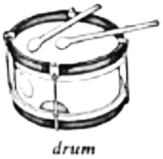

2022年北京市中考英语真题 · 阅读理解 第2篇 第24、25、26题
B

I joined a band （乐队）as a drummer in my middle school. I thought it would be fun playing the drum and meeting new friends. At first it was easy, but a month later, it got difficult. I was the only one who couldn’t keep pace （节奏）with the other players.
Our teacher, Angie, singled me out to keep practicing while everyone else got to relax. I felt ashamed （羞愧的）as my teammates watched me fail so many times. Finally I got so tired of practicing that I didn’t care about doing it right.
“Are you giving up on me. Steve?” Angie asked.
“Yes, I am,” I shouted. Angie sent me inside the music room where I cried out. Then she came in and said. “Don’t be sad. I believe you can make it!” She told me never to give up. She left me alone and I realized Angie was right—by giving up, I was also giving up on the team and myself.
With her comfort, I decided to go on practicing. However, I still couldn’t play well. Knowing my difficulties, my teammates gave me a hand. They spent about three more hours practicing with me every week. Thanks to their support and help, I began to keep pace with them. Later, we performed wonderfully in an important show.
In the whole process, I was taught that although we each had our own job to do in a show, it would take all of us working together to make the show great. I felt accepted and made great progress. I love everyone in the band. I can’t imagine what my school life would be like without them.
24. One month after he joined the band, Steve felt playing the drum was _________.
A. funnyB. helpfulC. noisyD. difficult
25. With Angie’s comfort, Steve decided to _________.
A. have a good restB. go on practicing
C give others a handD. start another band
give others a handD. start another band
26. From his experience, Steve learned about ________.
A. the value of teamworkB. the effect of shows
C. the importance of hobbiesD. the power of music